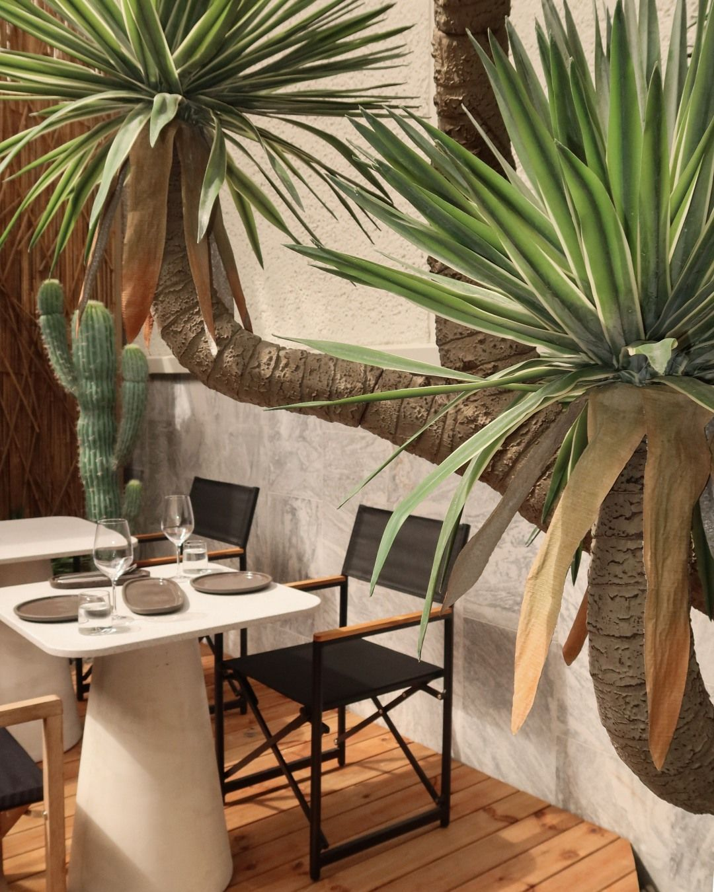
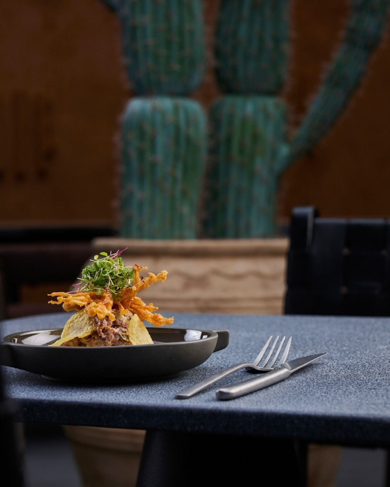
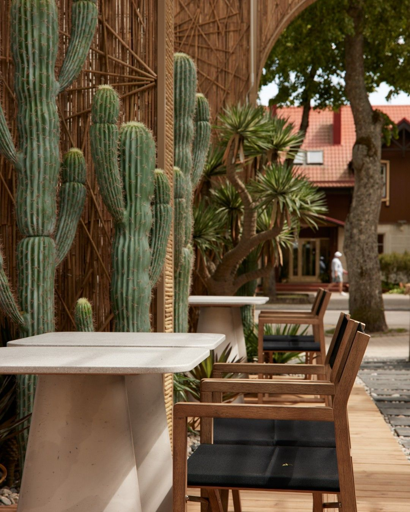

Restoranas. Baras. Jūsų laikas.Palanga, Lietuva
Vėlyvi pusryčiai / Vakarienė / KokteiliaiNeskubėkite. Jūs jau čia.
Truputį toliau nuo kasdienybės
Palanga už durų.
Kitas ritmas viduje.
„Besso“ gimė iš keturių bičiulių noro turėti vietą, kurioje gera susitikti. Čia gamtos faktūros, šilti žemės tonai ir dykumos įkvėpta erdvė susitinka su kūrybiška virtuve.
Užsukite ilgesniam rytui. Susitikite vakarienės. Pasilikite pokalbiui, kuriam pagaliau yra laiko.
Jūsų diena, Besso ritmu
Rytas turi savo skonį.
Vakaras - savąjį.

Paragauti. Pasidalinti. Sugrįžti.01 / Lėtesnė dienos pradžiaRytai, kuriems
Naujienos ir pasiūlymaiRytai, kuriems
nereikia skubėti.
Vėlyvi pusryčiai, kava ir laikas sau ar artimiausiems. Pradėkite dieną prie stalo, nuo kurio norisi pakilti truputį vėliau.
Skoniams ir susitikimams
Dar vienam
geram vakarui.
Fusion virtuvė, gėrimai ir kompanija. Kai norisi ne tik pavalgyti, bet ir pasimėgauti pačiu buvimu kartu.
Rezervuoti staliuką